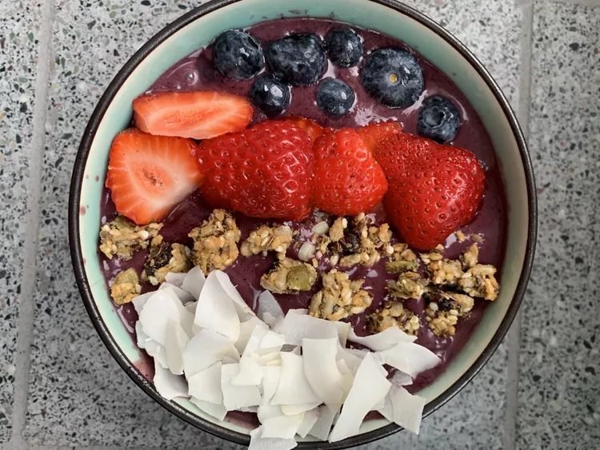

Easy Acai Smoothie Bowl

Description
This acai smoothie bowl is a delicious breakfast. My kids like it, so I sweeten it with honey, but you can also use agave for a vegan version or not sweeten it at all.
Top the smoothie bowls with some granola for crunch, nuts, or other berries of your choosing.
Ingrediants:
- 7 ounces frozen unsweetened acai pulp, partially defrosted in refrigerator overnight
- 2 medium ripe frozen bananas
- 1 cup blueberries
- ¾ cup almond milk, or more as needed
- 2 teaspoons honey, or to taste
Topping:
- 1 medium banana, sliced
- 2 tablespoons fresh blueberries, or to taste
- 1 tablespoon pomegranate seeds, or to taste
- 1 tablespoon large coconut flakes, or to taste
- Step 1
Combine acai, bananas, blueberries, almond milk, and honey in a blender. Blend until smooth. Smoothie should have a thick consistency, like frozen yogurt.
- Step 2
Pour into 2 bowls and top with banana slices, blueberries, pomegranate seeds, and coconut.